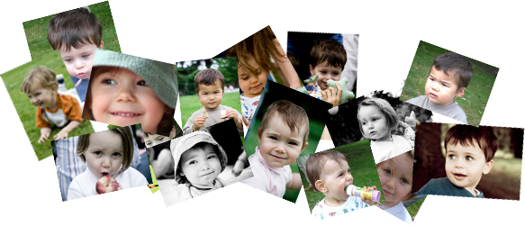

L'acquisition du langage chez l’enfant

Pour s’exprimer, la plupart des personnes utilisent la parole. Mais personne ne saurait expliquer comment il est passé des premiers balbutiements à la construction de phrases compréhensibles. C’est pourtant le langage qui fait de nous des humains, sachant transformer en symboles la réalité qui nous entoure.
Dans ce travail, nous cherchons à mieux comprendre la chronologie de l’apprentissage du langage chez l’enfant. Ce projet est mené par des étudiants du master MIASHS en collaboration avec des linguistes (Dipralang EA 739) et des informatiens du LIRMM. Il vise à expérimenter des méthodes et des outils issus de la science des données, pour mieux comprendre l’apprentissage du langage.
Les premiers éléments sont les sons du langage, qui sont combinés pour former des mots, qui à leur tour forment des phrases. Les méthodes mises en œuvre ont permis d’identifier toutes ces possibles combinaisons, et d’en déduire des parcours type de l’apprentissage du langage chez l’enfant.
Les données de l’étude ont été produite dans le cadre du projet ANR « Colaje Ortolang » visant l’étude de l’évolution des variations phonétiques. Pour cela, ils ont enregistré des vidéos à intervalles de temps réguliers chez de jeunes enfants. Les données ont été retranscrites dans un langage écrit, en utilisant une codification spécifique.